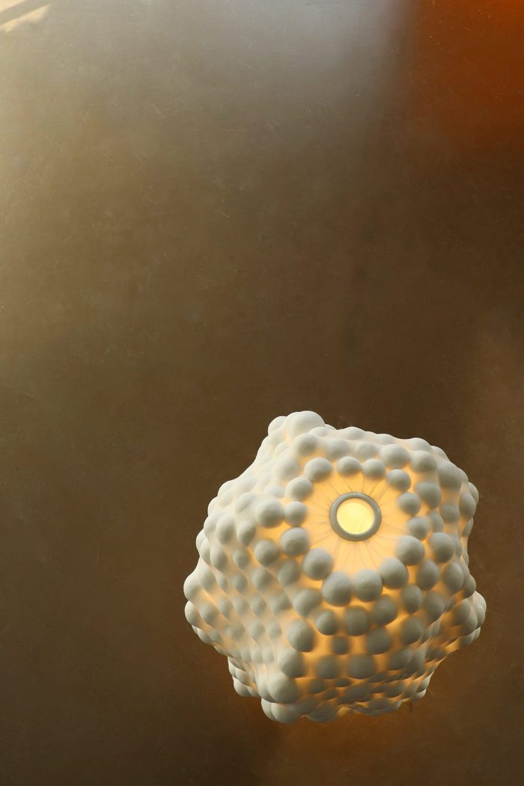
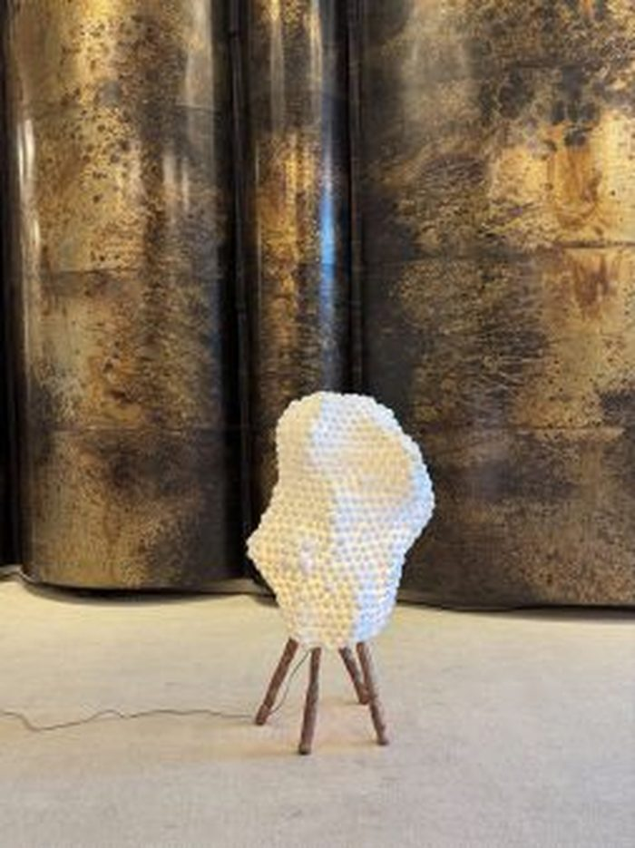

Maison d'Artiste — GLUE6Th FloorAll makers →
Nicolette de Waart
Nicolette de Waart builds light out of thousands of hand-kneaded paper spheres — a wayward continuation of the Japanese chochin tradition, where an object's apparent weight is a kind of misdirection. Her Berry Lamps take the irregular, knobbled skin of the fruit they're named for not as ornament, but as construction principle: no two spheres alike, no two lamps identical.
Instagram · Message Nicolette directly
100% of the sale proceeds go to the maker. Nicolette de Waart works independently, without gallery representation.
—Works3 recorded

Paper-kneaded balls · 60 x 45 x 45 cm
€ 2.800,– available

Paper-kneaded balls · 50 x 30 x 30 cm
€ 2.300,– available

Paper-kneaded balls · 160 x 90 x 40 cm, dimensions may vary — unique
€ 4.300,– available